内容要点
懂太多的高糕手译制的 Backcountry Gallery（Steve）一小时蒙版课：不是再点一遍「选择主体」，而是把选区质量、点颜色去蓝偏、自动蒙版的开与关、冷暖分层、眼睛数量滑块、径向暗角、蒙版交集（线性／画笔／颜色／亮度范围）与侧背光塑形串成可复用的控光流程；片尾补上 Cmd／Ctrl+/ 的模块快捷键总表。
知识结构
对齐蒙版面板；弃用易溢边的选择主体／背景，改选择对象＋复制反转。
白／黑主体染天空蓝：蒙版内点颜色降饱和，再回一点暖色温。
内侧推向边缘；Option 减选；复杂纹理先关自动再混合修边。
暖主体时背景略冷，利用冷退后暖前突增加立体感。
虹膜细调多滑块；缩回全图判断；数量滑块整体缩放强度。
反向径向＋小中心圈；可减去主体、压冷、降清晰度；勿一眼看出暗角。
先定边界再叠渐变／画笔／颜色／亮度范围；羽化过窄会海报化。
径向造光晕并融合边缘；仅限原有侧背光；Cmd／Ctrl+/ 查快捷键。
控光的本质是「先拿到干净边界，再在边界内做有方向的光」；工具可以换，选区质量与强度克制不能省。
00:00-02:04先把蒙版面板摆对，再谈技巧
开场直问：为什么别人的照片「有那种感觉」？Steve 认为关键常不在机身镜头，而在后期——尤其是蒙版有没有被真正用好。许多人没用，或用完比没用更糟。本片是约一小时的常用蒙版技巧合集，并预告片尾有一个「统御其他快捷键」的终极键。
动手前先统一界面：默认蒙版面板会挡照片。抓住顶部横条往右拖，直到出现蓝色吸附线再松开，让它与右侧其他面板对齐。作者强调 Lightroom 往往一事多法，以下是他个人高频有效做法。01:51 对齐帧可核。
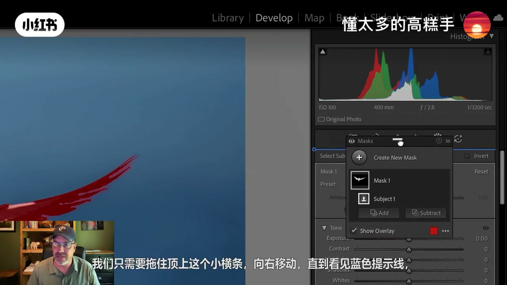
02:04-07:21选择对象＋复制反转，才把主体和背景拆开
第一个常见错误：依赖「选择主体／选择背景」。以飞行鸟为例，选择主体常溢到背景、翅间空隙也被盖住；一提亮，背景跟着亮。选择背景则漏选，压暗后翅间仍透亮斑。两种都难干净分离。
更好路径来自朋友示范：用「选择对象」。轮廓干净可用小框圈住；野生动物不规则或有树枝干扰时，默认用画笔粗涂即可，不必完美。得到主体蒙版后，右键「复制并反转」直接拿背景选区——再分别提亮主体阴影／白色、压暗背景曝光，层次立刻分开。飞羽细毛场景尤其建议对象选而非主体选。02:50／05:28／06:18 对应。
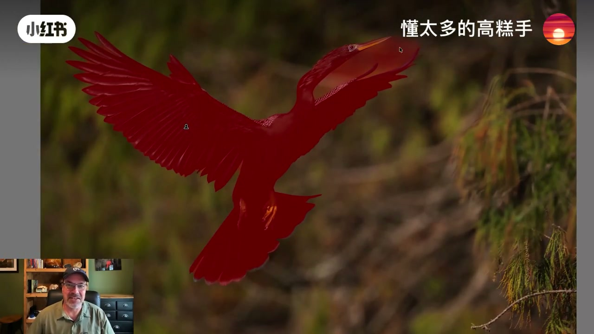
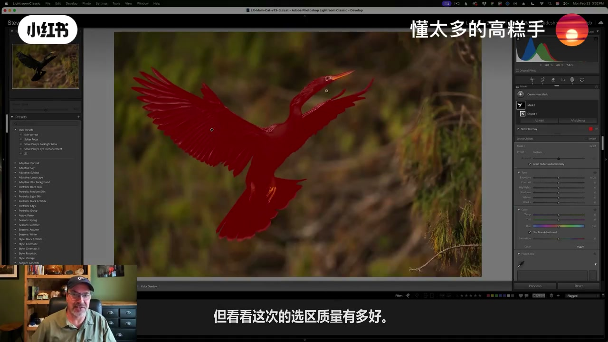
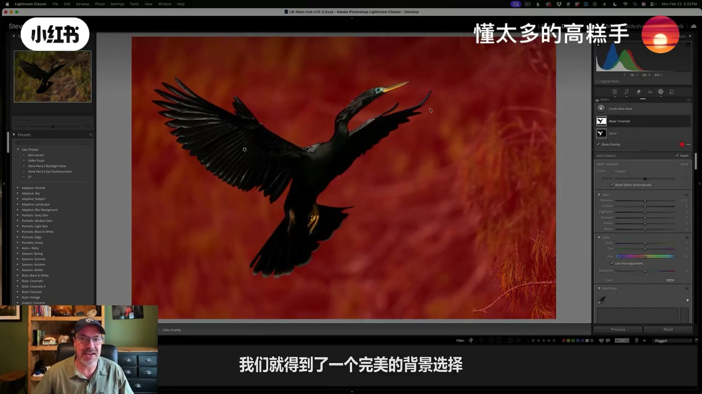
07:21-11:36点颜色：白鸟黑兽身上的天空蓝偏
白鸟对蓝天、黑兽对蓝环境光，羽毛常染上一层不容易一眼看出的蓝。校正入口不是全局颜色混合器，而是蒙版面板里、对象蒙版下方的点颜色：吸管点在偏蓝羽毛上，把饱和度偏移往左拖，蓝往往一下就没了。
颜色范围／饱和度范围多数时候不用动；白鸟日落场景可在同一蒙版里略加色温回黄。开关对比常让人吃惊「原图居然这么蓝」。作者习惯：凡白鸟或黑色动物、又有蓝天，必查蓝偏。09:17／11:16 为证据。
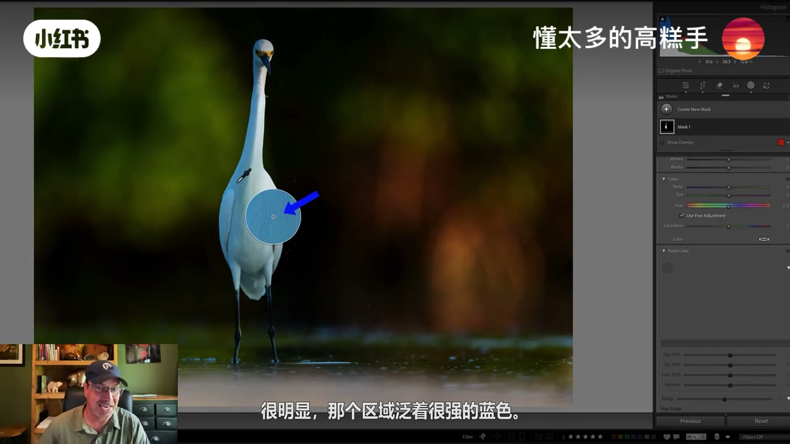
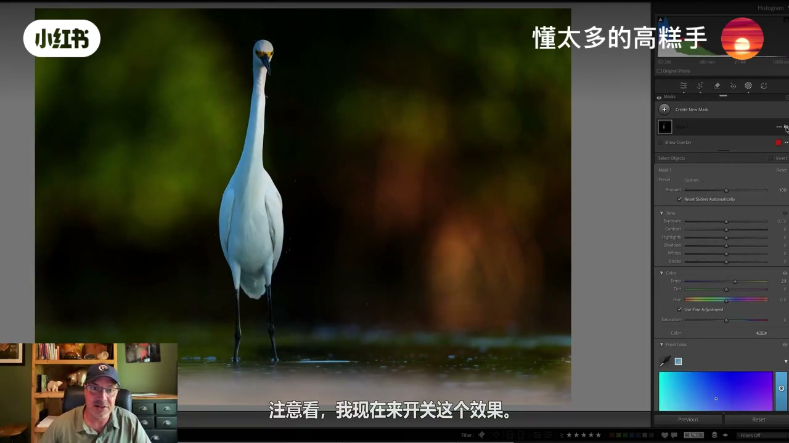
11:36-16:34自动蒙版：从内侧推向边缘，Option 负责擦
把画笔想成涂色工具，自动蒙版负责「尽量不越轮廓线」。默认常关；关着涂很容易涂进绿背景。开启后沿区域内侧朝边缘推进，比贴边硬画更稳；纹理复杂处可能盖不全，需多点几下补全。
画过界时：按住 Option（Mac）或 Alt（Windows）变为减选画笔。正画笔与减选画笔各自记住自动蒙版开关——要改减选侧，须按住 Option／Alt 再勾选或取消。作者倾向给减选侧常开自动蒙版，方便精确擦错。13:34／15:16 可指认。
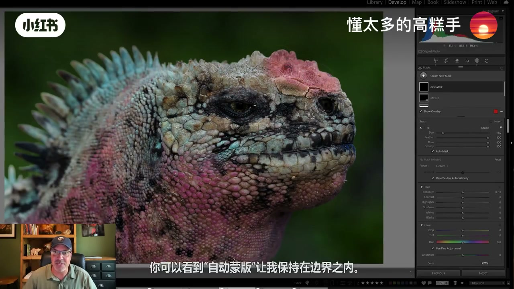
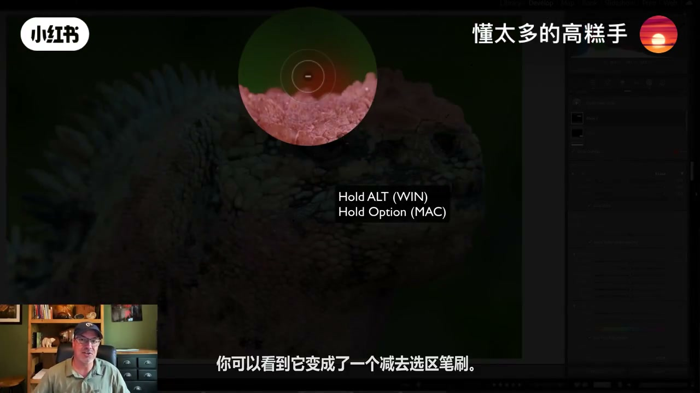
16:34-19:36纹理太碎时：关掉自动蒙版，再混合修边
幼鹰头顶羽毛线条密、明暗碎：开着自动蒙版大刷，会出现漏选与渗线；再动曝光／对比，边缘发「扁」或发怪。误区是学会自动蒙版后永远不关。
对策：先关自动蒙版，大致涂满目标区；再按住 Option／Alt 并开启自动蒙版，专修边缘与眼周。可来回多涂几次让算法认清不同纹理。降曝光时整块一致，才说明选区完整。这是「大面积手涂＋边缘自动」的组合拳。17:46 渗线帧。
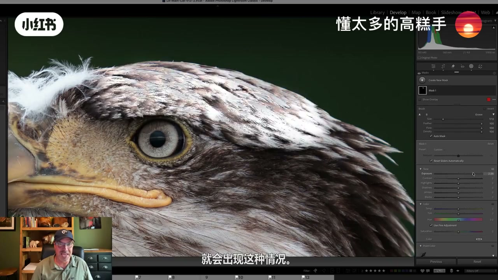
19:36-22:17暖主体、冷背景：一点点色温换立体感
作者增强纵深的习惯：暖色视觉前突、冷色后退。主体偏暖时，把背景色温略降（偏蓝，有时带一点绿），常能让主体「站出来」。沙丘鹤与加拉帕戈斯鸟两例都用背景选区演示；正式工作更推荐选择对象求精，演示里用选择背景省事。
幅度往往很小（约九到十个单位也够看）。不是每张必做：能冷则试，好看就留。前后开关对比：平 vs 前突，差别清晰。20:53 对比帧。
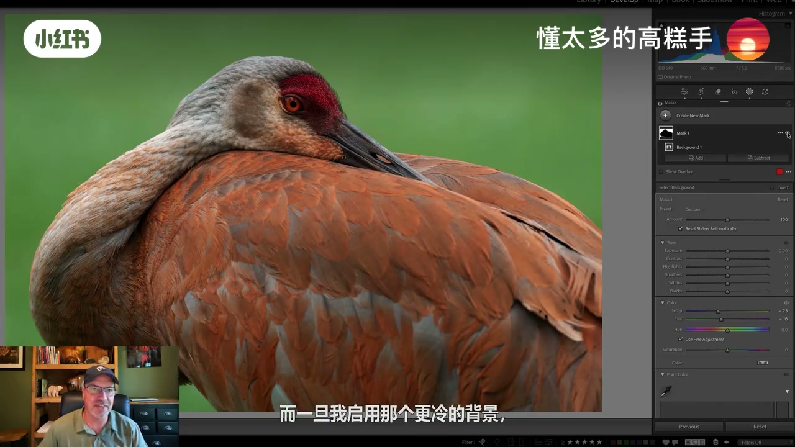
22:17-29:59眼睛增强：多滑块组合，缩回全图，再用数量收
野生动物片眼睛几乎总是成败点。放大到约 200%，画笔＋自动蒙版描虹膜；若默认红叠加看不清，把叠加色改成亮绿。曝光略提，高光／白色帮眼神光，黑色可 −2～−5 加对比；纹理与清晰度增强结构；若出噪点再局部降噪。饱和度多数不动，欠饱和才补。
最大秘诀：不要在放大视图里定稿。调到「觉得好」后缩回整图——经常发现过猛。这时用蒙版顶部的「数量」滑块整体缩放整组效果（可减可加），不必逐个回退。眼睛以外的蒙版后期也常用数量做最后一档。24:26／28:19 对应。
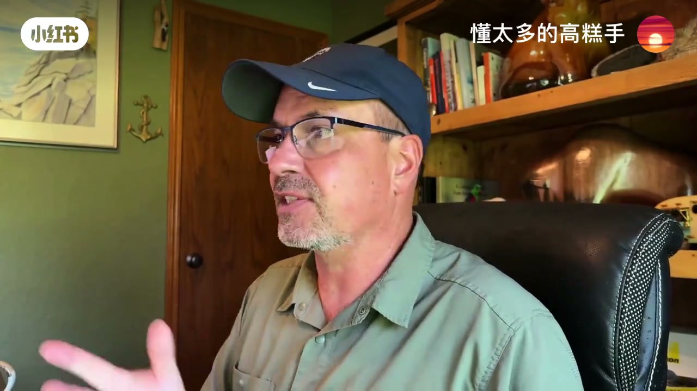
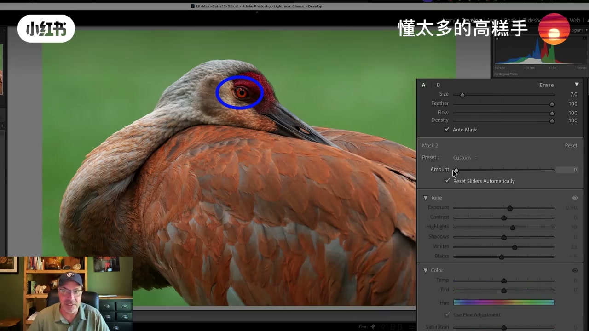
29:59-37:32径向渐变做暗角：可控、可剪主体、不能被人看穿
内置暗角可控性有限；径向渐变反向后，外圈受影响、中心豁免，还能改清晰度、色温等，把视线导向主体。诀窍：中心圈保持相对小、羽化够软——中心拉太大或过渡太硬，一眼假。可把径向略上移盖住头眼附近弱渐变；也可用减去→选择对象把主体剪出晕影，或只擦脸眼。
还可给受影响背景略加蓝、略降清晰度与纹理柔化边缘。竖构图主体可用窄高椭圆反向压两侧。核心标准：观众不该说出「你用了暗角」；过猛就拉数量。Shift 拖控制柄可锁长宽比。31:14／33:30 为塑光帧。
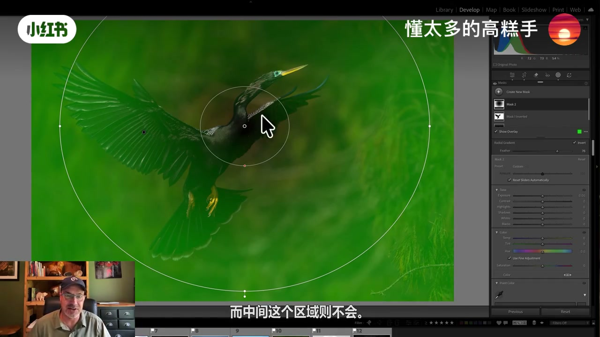
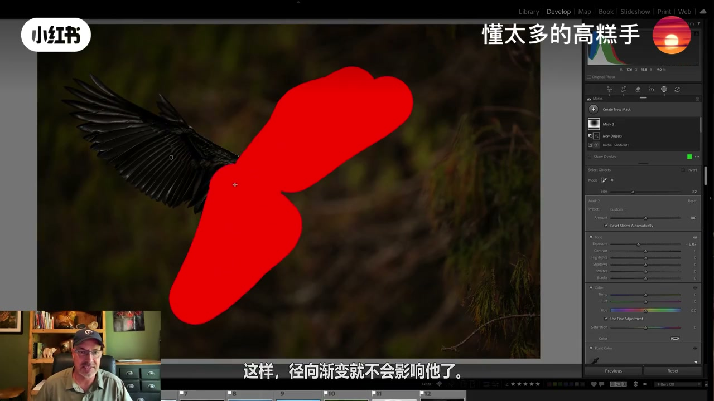
37:32-48:17蒙版交集：先定边界，再在里面叠第二把刀
蒙版真正力量常在精细化。「与蒙版相交」＝两个选区重叠处才生效。心智模型：第一个选区划定边界，第二个工具（线性渐变、画笔、颜色范围、亮度范围）只能在边界内工作。人物例：整背景压暗显抠图，则选主体后相交线性渐变，只在人物下半加压暗，光影更自然。
飞羽提亮：先选择对象拿干净鸟体，再相交画笔——笔怎么刷都不出鸟外，像强化版自动蒙版。干扰色块：背景∩颜色范围点采样压曝光。多处高光：背景∩亮度范围；羽化手柄过窄会出现海报化断层，要把过渡拉开。口诀：先边界，再相交。40:12／43:20／46:56 可核。
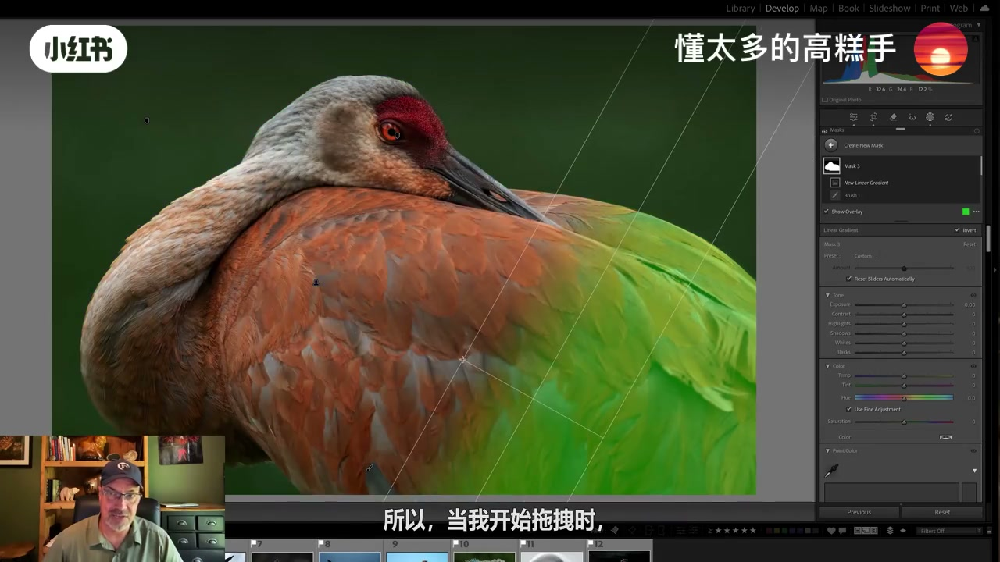
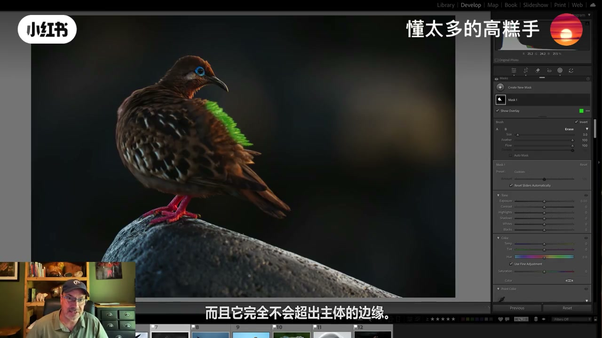
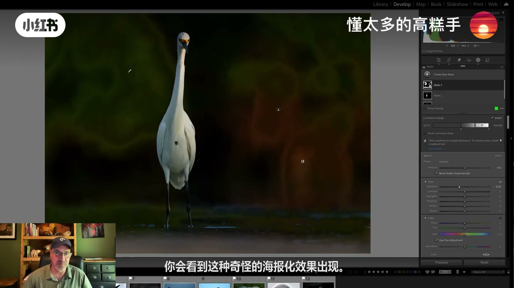
48:17-55:03侧光背光增强：径向造光，低流量把光「粘」回主体
取景时有侧／背光，回电脑却平了：可在受光方向拉大径向，减去→选择对象挖掉主体，再混着提曝光／高光／阴影，加黄或品红暖光；效果面板大幅降纹理、略降清晰度与去朦胧，做出阳光炫目难「看穿」的光晕。
为免主体像贴上去，用流量约 50% 的大画笔在耳侧、鼻旁、背脊轻刷，让光溢出到轮廓。亮度范围手柄可保留更多暗部，但作者多数时候只靠数量收强度。硬边界：正面光主体不要硬套此法；侧光可用，背光更佳。50:41 光晕帧。
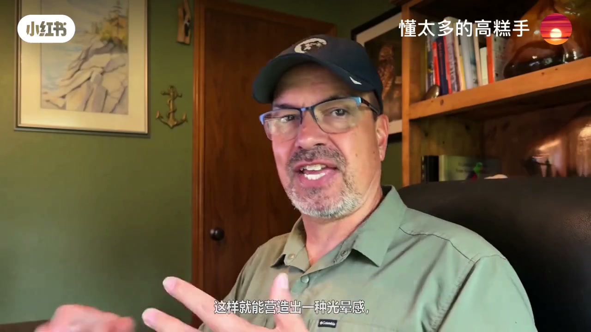
55:03-56:01终极快捷键：Cmd／Ctrl + / 调出模块键位表
片尾导流后兑现开场承诺：在 Lightroom 按住 Command（Mac）或 Ctrl（Windows），再按斜杠键 /，弹出当前模块的全部快捷键列表——例如修改照片模块一览。点一下即可关掉。
作者称它「能统御其他快捷键」：忘了某个键时先调总表，而不是跳出软件查文档。55:43 列表帧收束全片。
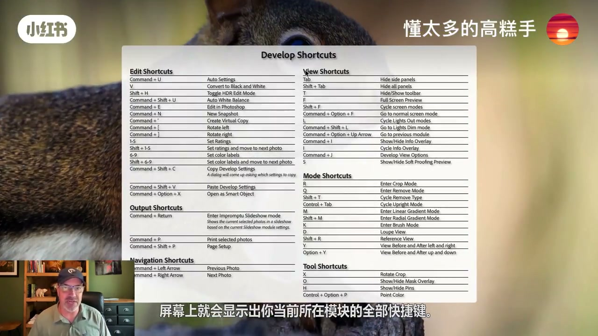
完整转录（1307段）
以下文本由 Whisper medium 模型自动转录，可能存在少量识别误差，已尽可能修正。
你是否曾看着一张照片 心想 为什么我的照片就达不到这种效果呢
其实很多时候 问题并不出在相机 镜头或摄制上 诸如此类的东西
关键在于照片的后期处理方式 如何完成后期处理 这才是一切的关键
而完成这个步骤的关键一环就是使用蒙版
如果你曾好奇过这些蒙版技巧的奥秘 那么这个视频将为你一一揭晓
因为事实是大多数人都未能充分利用蒙版功能 他们不知道如何使用它
或者有时他们确实用了蒙版 结果照片反而比没处理之前更糟
我是BackcountryGallery的Steve
所以这一次我想与大家分享我最常用 最喜爱 同时也是最有效的 Lightroom蒙版技巧
当你完整看完这个视频后 你将会掌握大量新的技巧和窍门
你或许该拿张纸做些笔记 因为这是一堂长达一小时的大师课
所以给自己倒杯好咖啡 舒舒服服地坐好 放松身心 享受这段视频吧
如果你能坚持看到最后 我还为你准备了一个额外的小技巧
那是Lightroom的终极快捷键 它是一个能统御所有其他快捷键的快捷键
所以一定要看到最后弄清楚它到底是什么
不过在我们开始之前 我想确保我们有一致的观看体验
所以我们要让你的屏幕界面看起来和我的差不多
那么我们快速切换到电脑界面 快速调整一下 然后我们就可以准备开始了
好的 我们要做的是移动蒙版面板
默认情况下 Lightroom会把它放在这边 当然你可以展开它
但它会把照片挡住 我们的目标是将它与其他面板对齐
我们只需要拖住顶上这个小横条 向右移动 直到看见蓝色提示线
然后松开 现在你的屏幕界面就和我一样了 当然
在Lightroom里 几乎每件事都有不止一种操作方法
这些是我个人一直在用 并且觉得非常有效的技巧 所以希望它们对你同样有帮助
我们马上开始 我先来展示一个最常见的蒙版错误 以及如何修正它
我想向你展示一个更好的方法来选择主体 实际上也包括选择背景更好
我知道你在想什么 Lightroom的蒙版面板下明明已经有按钮
可以让你选择主体和选择背景了
那这到底还有什么可说的呢 我来给你看看 问题所在
如果你使用Lightroom超过五分钟 我敢肯定你已经猜到我要说什么了
这里我们的主体是这只鸟 我想选中它并且把背景分离出来
所以我来到蒙版面板 点击选择主体 因为这就是我想选中的主体
我点了这个按钮 看看点击之后发生了什么
它确实选中了主体 但也图出了界
你看这边有很大一部分背景也被蒙版覆盖了
还有这些翅膀之间的区域也被蒙版盖住 甚至下面这里也有一点
那么如果我调整这只鸟 就会影响到背景
比如说我把亮度大幅度调高 这样你能看得更清楚
但你看这里很明显背景也同样受到了影响
所以我们完全没有把主体单独分离出来 颜色全都溢出去了
效果并不理想 那么如果我们删掉它 然后试试选择背景呢
因为现在我想调整背景
情况一样 但带来了相反的问题
情况一样 但带来了相反的问题 对吧
我们看这里 可以看到它并没有把背景的所有区域都选中
而且翅膀之间的部分也还有问题
比如说我想把背景调暗 看这里
这里有一大块明亮的区域 这里和翅膀之间仍然有亮光透过来
所以这些方法对我们来说都不太管用
那如果我告诉你有更好的方法呢 我必须得感谢一下我的朋友柯李
大约一年前他给我展示的这个小技巧
当时他帮我节省了大量用画笔修饰的时间
所以我也想和大家分享这个方法
简单来说 我们要做的不是去选主体或背景
而是使用这里的选择对象选项
我们点击它 这里有两种选择对象的方式
一种是画笔 另一种是这个小的选择框
现在这个选择框 如果你的主体比较突出
周围环境里没有与之相近的元素
也就是说它基本上是独立的
就像这只鸟一样 很多时候这个方法会非常好用
你只需围绕主体画一个框 它就能自动识别主体
所以这是一种非常简单的方法
不过我要撤销刚才的操作 回到选择对象功能
这次我们用画笔来操作
我处理野生动物照片时通常用画笔
主要是因为野生动物形状有时不太规则
或者旁边可能有树枝等干扰物
大的选择框容易误选
所以对于野生动物 我通常默认使用画笔
但我想把两种方法都展示给你们
因为当你处理的动物像这样轮廓清晰干净时
你完全可以使用那个选择框 还能节省一两秒钟
但大多数情况下 我会这样操作
就像我接下来要做的 像这样
用画笔 涂抹主体 即可
你只需要把它涂上色 不必涂得完美
它就会给你一个不错的选区
刚才用选择框操作时你可能注意到了
但看看这次的选区质量有多好
当然这部分选区非常清晰干净
这片区域也很干净 这个选区要好得多
另外要说明一下 并不总是这么顺利
有时效果不会像这次这么完美
虽然通常非常接近
但很多时候你仍需进入蒙版面版
选择减去功能
然后用画笔减去一些误选的区域
但在我们这个案例中 我们不需要这样做
因为它这次完成得非常好
那么信不信由你 接下来我会这样做
不是直接调整主体
而是直接复制这个蒙版并反转它
原因是这样我就得到了一个完美的背景选区
选区 我们来看看
找到我们创建的这个蒙版
右键点击它 选择复制并反转蒙版
同样右键点击即可调出这个菜单
菜单 我轻轻点一下这里
好了 完成
我们就得到了一个完美的背景选择
现在这个选区正好与我们之前的主体选区相反
所以现在我们可以直接点击这里的主体蒙版
然后进行调整
假设我想提亮那里的阴影
我就增加亮度 我会让它稍微亮一些
或许再提高白色阶
并降低黑色阶
为它增添一些冲击力和对比度
再比如说我想压暗背景
那么我就选中这个反向蒙版
然后降低一点曝光度 让背景暗下来
这样主体和背景之间就形成了很好的分离
当然 如果你愿意可以继续调整
但这确实是一种非常有效的方法
能让你的主体从背景中凸显出来
并且可以分别处理背景和主体
避免使用选择主体和选择背景
使容易产生的选区重叠问题
所以下次你处理主体时
尤其是如果主体有伸出的飞羽或细微的毛发
可以尝试使用选择对象而非选择主体
我想你会对效果更满意
好了 接下来我想展示如何解决一个问题
很多人都遇到过
甚至很多人自己都没意识到
但是一旦你看过这个
你就会开始在自己照片里发现它
这个问题就是白色或黑色区域泛蓝过多
因为比如说你拍了一只白鸟
就像本力中这样
而背景是蓝天
很多时候白色鸟类的羽毛会受到天空蓝色环境光的影响
想要校正这种偏色
有时会挺麻烦的
不过我要教你在Lightroom里一个非常巧妙的方法
它能帮你轻松解决这个问题
另外我想强调一下
这个方法同样适用于黑色动物
黑色和白色的物体都容易沾染上这种蓝色调
下面就是具体的校正方法
我们来看一下
我们来看这只白鹿
乍一看它看起来挺正常的
但实际上它身体的这一侧
就这里的这一片蓝色的痕迹很重
等我真正开始校正之后
你就会发现它原来有多蓝
这可能会让你吃惊
因为很多人在自己的照片里是注意不到这点的
对吧
但一旦你知道了
一旦你开始留意它
你就会处处都注意到它
我们要做的是在这里使用选择对象功能
我快速的选中它
好了
接下来我找到点颜色工具
有一点需要快速说明一下
我所说的点颜色指的是萌版控制向下的那个点颜色
不是在颜色混合器面板下的那个点颜色
那两个在不同的面板里
颜色混合器下的那个会影响整张图片
而这个工具只影响萌版所覆盖的区域
就本力而言
也就是我们选择的对象这只鸟
这里有一个小的吸管工具
我来点击一下
它点击之后它的采样点会悬停在空中
现在随着我的鼠标光标移动
我可以在此处选取我想要的任何颜色
作为点颜色的采样
构建这里的颜色面板
我要做的是把鼠标移到这些蓝色的羽毛上
如果你观察这里的局部放大视图
很明显那个区域泛着很强的蓝色
那么我来点击一下
它就在这里
给添加了一个小色样
接下来我只需要向下找到
合度偏移这个选项
然后我把它向左拖动
以降低蓝色的饱和度
看
这里的蓝色一下子就消失了
现在看起来好多了
现在如果你发现某些区域
还残留着一些蓝色
我这幅画面中倒没发现
但如果你发现有的话
因为这种情况有时确实会发生
我们这里还有一些范围选项
可以扩展采样范围
目前我们这样操作时
它会参考我们选中的颜色
以及该颜色两侧的一些其他颜色
我们可以扩展或缩小
它要寻找的颜色范围
而且你可以在上面的方框中看到
它是如何扩展或收缩这个范围的
也就是饱和度偏移
所使用的采样范围
这里还有一个饱和度范围
这个我们也可以用
它的原理也差不多
这里有一个小方框
调整这里我可以拖动这个滑块
来增加饱和度
就像你在上方采样框中看到的那样
或者降低它也可以左右移动调整
前后移动
不过我要告诉你的是大多数时候
我根本不需要去动饱和度范围
甚至连普通颜色范围都不用调
绝大多数情况下你只需要做我刚才演示的那一步
就够了就是直接降低那个饱和度
那么在这个例子中
除了做这一步之外
因为这类白色的鸟类经常出现这种情况
尤其是在一天中的这个时段
再往里面加一点黄色
因为这是在日落时分拍的
它应该比现在更黄一点
所以我就用这个蒙板来调高色温
我再往里加一点黄色
这样看起来就自然多了
这张照片我就调整到这里
用点颜色工具后
我会先降低饱和度
再加一点黄色回去
我们来看看前后对比
这样你就能看出区别了
因为很多人一开始没意识到它有多蓝
如果你初看时觉得
看起来还行 没觉得有多蓝啊
注意看 我现在来开关这个效果
看 原图比起我们调整后的样子
要蓝得多
我们只是快速做了几出调整就实现了这个效果
希望这个技巧对你有用
顺便一提 每当我处理白色的鸟
或任何黑色的动物时
我都会特意检查那些蓝色色偏
因为它们几乎总是存在的
尤其是在有蓝天的情况下
接下来我想介绍一下
自动蒙板这个功能
它附属于画笔工具
很多人要么没发现它
要么没充分用好它
要么用错了方法反而把照片修坏了
所以我来教你
如何充分发挥它的作用
并避开所有常见的坑
但首先 我需要为不太了解的朋友解释一下它是什么
我发现理解自动蒙板最好的方式
就是把你的画笔
想象成涂颜色的工具
而自动蒙板能帮你保持在轮廓线内
比如在动物和背景的交界处
它能帮你把笔触限定在动物身上
而不会涂到背景上
我认为最直观的方式就是直接演示
那我们开始吧
比如我们画面里的这只动物
假设我们想用画笔来涂抹这片白色区域
以便对它进行一些调整
好的
那我们该怎么做呢
我们点击创建蒙板下的画笔工具
如果我们往下看
画笔面板这里
面板展开后
我们这里有一些选项
我们现在感兴趣的是自动蒙板
我现在先不勾选它
因为默认是关闭的
而问题往往就出在这里
所以我把画笔调小一点
顺便提一句
注意如果你在Lightroom里使用鼠标
你可以通过前后滚动鼠标滚轮来调整光标
也就是画笔的大小
这个功能很实用
那么我们继续
我们来看看如何涂抹这个区域
我从这里开始
如你所见我马上就涂到边界外面去了
很难不碰到那个绿色背景
无论我怎么小心
当然我可以放大图像
尝试用更小的笔刷来处理这些细节
但要用一只小小的
不断调整大小的画笔
去处理所有这些起伏的边缘
那会花上非常多的时间
这时自动蒙板就派上用场了
我按command地撤销
刚才的操作
我重新创建一个画笔蒙板
这次我开启自动蒙板
用同样大小的画笔来涂抹一次
这次我直接沿着这里涂抹
你可以看到自动蒙板
让我保持在边界之内
使用自动蒙板的一个技巧是
当你在想要处理的区域内涂抹时
要向边缘方向推进
而不是直接贴着边缘画
我是在边缘的内侧涂抹
一边画
一边朝那个方向延伸
自动蒙板的另一个特点是
它会识别边缘颜色和色调
并尽量贴合这些识别到的区域
所以有时自动蒙板可能不会提供
超级完整的覆盖范围
因此有时你需要对某些区域多画几次
以确保全部选中
就像上面这里
你可以看到那个区域并没有被很好的选中
所以我再次点击
将它纳入选区
你可以看到这一块区域还没有完全覆盖
因此我再轻轻点一下
彻底把它加进来
以确保它被包含在选区中
所以这就是使用自动蒙板的一个风险
我来给你展示一个巧妙的应对技巧
如果你遇到比这更棘手的情况
我马上展示给你看
但是你可以看到差别非常巨大
使用自动蒙板来选择那个区域
比用普通画笔要容易得多
所以自动蒙板的关键优势
就在于此
它能帮你准确地限定在边缘之内涂抹
不过有时候就算不用自动蒙板
你也可能会画到边界外面去
那我故意试试看
能不能在这里故意画出去
好 你看成功了
假设我不小心画的过了头 画到背景上了
因为很多人可能没有意识到
不仅是使用自动蒙板时
但对于真的画笔工具来说
都有一个通用的技巧
如果你按下键盘上的option或out键
具体是哪个键
取决于你用Windows还是Mac电脑
你就会得到一个功能相反的画笔
比方说现在这个是添加选区笔刷
我们正在涂抹
想要选中的区域
而如果我按下out或option键
你可以看到它变成了一个减区选区笔刷
所以复画笔会将其移除
复画笔和正画笔
各自都有独立的控制设置
例如
现在我用普通画笔开启了自动蒙板
我没有按out或option键
但是如果我将其关闭
然后按下option或out键
你可以看到复画笔仍然开启了自动蒙板
我可以将其关闭
松开后再次按下out或option键
自动蒙板依然处于关闭状态
所以如果我想
为相反的画笔开启或关闭自动蒙板
以这里的复画笔为例
我会按住option或out键
然后在操作时勾选或取消勾选
同时保持按键按下
现在继续按住option或out键
我就可以在这里操作
我可以擦除刚才犯的小错误
并进行修正
效果很好
顺便提一下
我通常倾向于为我的备用或选项画笔
保持自动蒙板开启
所以如果我按下option键
很可能是因为我搞砸了
就像你看到的那样
所以我需要一些精确操作
这样我就能以最佳方式清理
所以大多数时候
无论是简单还是加深画笔
当我按下option键时
根据你的操作
我希望为其开启自动蒙板
仅仅因为我希望蒙板更加精确
现在来总结一下自动蒙板部分
我想展示一下这个问题
我提到的陷阱是当纹理和图案过多时
自动蒙板可能会失效
那么让我们来看看
所以我们要做的是转到这只鹰
这只年轻的幼鹰
假设
我们想用画笔选中这片区域
我们想用画笔处理这个区域
就这里 也许我们是想增强
它头顶这片区域的质感
随便 什么目的
所以我要选择画笔工具
在这个例子中 我会确保自动蒙板是开启的
然后把画笔调大一点 在这里涂抹
我们来看看效果如何
我就在这个区域涂抹一下
如你所见
它的效果并不理想 对吧
原因在于这里的纹理和图案太复杂了
所以如果你仔细观察
这里有很多白色区域
甚至还有一些地方自动蒙板根本没有覆盖到
再说一遍
这是因为自动蒙板在识别边缘
它在识别纹理
它在识别图案
它试图帮你精准地在边界内涂抹
那问题是这里的线条实在太多了
而我们想要的是全部区域
简单来说
我们本意是避免涂到绿色的帽子之外
结果它还是稍微涂出去了点
现在我们看看
调整后的效果
我们调整曝光度就会出现这种情况
看到那些渗入的黑线了吗
就在那儿
看起来很奇怪 因为选区并不完整
所以当你对它进行调整时
特别是像对比度这类调整
有时会导致效果看起来扁平
或者有点不对劲
这就是原因
因为你使用了自动蒙板 我觉得这是很多人的一个误区
他们了解了这个功能后
会说这真是太棒了
然后打开它就再也不关了
但有的时候它反而会帮到忙
那么遇到这种情况该怎么办呢
我们要做的是撤销刚才的操作
然后新建一个画笔
这一次我们要把自动蒙板关掉
这次我就这样大致涂抹这些羽毛区域
尽我所能
好 这样看起来还行
但画笔覆盖到了眼睛
也覆盖到了头顶
不过我敢打赌你已经猜到我要做什么了
我要按住option或alt键
确保勾选了自动蒙板
因为我很在意这个边缘
我想精确地处理好这个边缘
我要做的是用画笔沿着那个边缘进行绘制
在开启自动蒙版的情况下
它能自动精准的
沿着边缘绘制好了
这样我就得到了一个干净利落的边界
我看到这里还是碰到了眼睛
所以我要在这里换用更小号的画笔
沿着这些边缘来修整
把这些重叠的部分去掉
再次提醒自动蒙版是在识别图像中的一些图案
所以有时候你需要来回涂抹几次
确保画笔覆盖到不同的颜色和纹理区域
才能让它更好的识别
现在如果我降低曝光度
整个选区的调整是一致的对吧
因为整个区域都被选中了
你看如果你观察这个蒙版选区
这里的所有部分都被选中了
所以这是一个非常方便的技巧
结合自动蒙版和相间模式的画笔
来选取那些难以直接选取的区域
同时又能保持选区干净利落
使其精准的从背景中分离出来
希望这个技巧对你有帮助
关于自动蒙版
我用来增强图像纵深感和立体感的一个技巧是
当主体是暖色调时
将背景处理为冷色调
有时反之易燃
关键在于照片中的冷色调会显得靠后
在视觉上会向后退
而暖色调则倾向于向前突出
所以当我的主体是暖色调时
我有时会刻意把背景调冷一点
就一点点
就是为了给画面增添一些立体感
我来演示一下我说的是什么意思
就拿这张沙丘赫的照片来举例
我这里有好几张
我待会可以都给你看看
但我们先从这张开始
我快速操作一下
选择背景
我知道这个选区不是完美的
但就我们的演示目的而言
这已经够用了
这个技巧的核心就是降低色温
很多时候就是往蓝色调
有时是蓝色和绿色
我基本上就是让背景的色温比主体更冷一些
看我这里有一只漂亮的暖色调沙丘赫
他身上有很多漂亮的暖色调
所以我就把背景调冷
把那些蓝色调降一点
再把那些绿色调也降一点
而且如果你注意看
他真的开始从背景中凸显出来了
我可能调得有点过
但我想给你看看调整前后的对比
你看现在这样
画面显得有点平
而一旦我启用那个更冷的背景
主体立刻就感觉向前突出了
照片也更有立体感了
你看就在这里
看到了吧
这是调整前背景焦暖
这是调整后背景焦冷
老实说
更冷的背景其实更接近现场实况
因为它身后本是先绿的草地
但在这张最终照片里却有点偏黄了
所以你能看出它在背景中凸显出来的方式有很大不同
当然
我们还可以通过调整阴影
来做些其他处理
让它显得更有立体感
但这总是一个不错的开始
我再给你看一个例子
我们这里有这只鸟
这只加拉帕哥斯哥
这张照片主体已经很突出了
但我觉得背景色调可以再冷一点
我再次选择选择背景
通常我会用选择对象功能
这样更精确
但为了省事
这次我们就直接这样操作
就这样
选择背景
现在背景区域都被选中了
我可能也会把这块石头去掉
但现在还是那句话
我们主要是为了演示这个技巧
我在这里把蓝色调降低一点
就一点点
不多大概九到十个单位
就这样
你看这对主体从背景中凸显出来的效果产生了多大的影响
当背景色调更冷时
照片看起来更有立体感
所以这并不是我每次都会用的技巧
但如果我有一个暖色调的主体
而背景有可能调的更冷
很多时候我会尝试一下
看看是否能增加一些层次感
如果效果不错
很多时候我就会保留它
希望这个技巧对你有用
接下来我们谈谈眼睛增强
因为在大多数情况下
眼睛是最重要的部分
每一张野生动物照片都是如此对吧
眼睛是照片成功的关键
这就是为什么我们总是关注眼睛是否清晰锐利等等
所以我们希望眼睛呈现出最佳状态
因此很多时候我会对眼睛进行一两处微调
让它看起来更好一点更好
下面我来展示一些我常用的方法
以充分提升眼睛的效果
这里我要强调一下
很多时候我只进行非常细微的调整
具体调整程度取决于拍摄主体切记过度
因为那样真的会适得其反
不过我来教你几个小技巧
所以大多数人在处理眼睛时
只想到调整曝光提亮眼神
但其实你能做的远不止这些
我来演示一下
我们把这张沙丘赫的照片放大到200%
看
这里有一个非常清晰锐利的眼球
接下来我们在这里创建一个新的萌版
我直接选择画笔工具
我会确保自动萌版是开启的
因为我想精准的绘制红膜区域
而且根据你红膜的颜色
你可能需要更改萌版叠加显示的颜色
目前我设置的是绿色
但是如果我使用默认的红色
然后尝试在这里绘制
其实就不太容易看清了
所以我会到下面这里把它改成亮绿色之类的颜色
所以这是个非常实用的小技巧
再说一次
这个选项就在显示叠加的副选框旁边
副选框
看到这个小色板了吗
就在这直接点击它
你就可以为叠加层选择任意你想要的颜色
那么在开启自动萌版的情况下
它能帮助我避免画到红膜以外
我就在这个区域周围绘制
如果我画的有点过头了
就像刚才那里我会按住Option或Alt击
擦掉重画就可以了
或许把画笔调小一点
好了
这样看起来不错
这样看起来可以了
好了
有时你会发现如果眼睛里有高光点之类的
就像我们这里有的这些眼神光
在使用画笔涂抹时自动萌版功能
可能无法完全覆盖所有区域
所以你可能需要来回多涂抹几次
才能确保将红膜的所有部分都选中
现在看起来效果相当不错了
这些区域我不太担心
好了
也许只需要再轻点一下就行
那么我们再来看看下方的滑块
大家首先想到的通常是曝光
这样你可以让眼睛更亮
这当然是处理过程中的一部分
除此之外
我们还有很多其他可以调整的地方
具体取决于眼睛本身及其所处的环境
并且所有这些工具都可供我们使用
通常我的做法是
我来展示一下我典型的工作流程
但你需要根据你正在处理的眼部情况进行调整
所以我通常会稍微增加一点曝光
加一点点
我还会倾向于把高光滑块
稍稍向右推一点
这样也能稍微增强那些眼神光
另一个对提亮眼神光有效的是白色滑块
你可以将它稍微调高一些
这样能有效
提亮眼睛内部
已有的明亮区域
同时不会让眼睛整体变得过亮
同样根据眼睛的具体情况
有时你需要调整阴影
这取决于眼睛的类型
对于这只眼睛
我们并不需要过多的增强阴影
所以我就保持它不动
有时我甚至会使用黑色滑块来增加一点对比度
尤其是当眼睛内部有一些纹理结构时
所以黑色滑块我不会加太多
通常减2到减5左右的效果就已经很好了
当然我们还有颜色选项
我们还可以稍微调整眼睛的颜色
如果我们觉得它太蓝或者太黄了
我们也可以反其道而行根据需要去增强它
我们可以让它更绿
或者如果想调整色相也可以让它更偏品红
我觉得这只眼睛的颜色看起来已经相当准了
所以这里我就不调整了
大多数时候我们都可以调整饱和度
我一般不会调整眼睛的饱和度
但有时候你可能会遇到眼睛颜色有点欠饱和的情况
可能是在弱光环境下拍的
显色效果没有达到你的预期
那你就可以在这里适当增加一些饱和度
另外两个很实用的工具是纹理和清晰度
特别是对于这样一只眼睛
它的纹理细节非常丰富
所以我会稍微增加一点纹理
再加一点清晰度来增强眼睛的立体感
让它更突出一些
现在还有一点要注意
虽然这个例子没有出现
但有时候当你做这类增强处理时
你会发现眼睛部分出现了皂点
如果出现这种情况
你可以往下找到减少杂色选项
适当增加一些降噪强度
就能帮助消除那些多余的皂点
如果你碰巧出现了这种情况
尤其是在使用了纹理和清晰度之后
总的来说现在看起来效果不错
我觉得可以再稍微增加一点曝光
因为清晰度调整让画面暗了一些
现在我要告诉你
眼睛增强的最大秘诀
那就是千万不要在这样放大查看时
判断效果
因为很容易处理过度
所以我的建议是
当你调整到自己觉得满意的程度后
把曝光白色高光等所有参数都调整到位
调整好这些参数的组合
然后再缩小到正常尺寸
让它刚好在画面内
那么来看看效果
如你所见效果看起来有点过猛了
这很典型
但问题是我们该怎么修正呢
因为我们调整了曝光
高光阴影
这张图里我们没动阴影
我们调了白色黑色
我们没有做颜色调整
但调整了纹理和清晰度还有皂点
所以我们这里混合了多种调整
这个组合我很喜欢
只是觉得每一项都调得有点过头了
这算是技巧中的技巧
额外福利
这时候就该数量划块登场了
很多人不知道有这个划块
或者不太清楚它的作用
我们来看看
看这里有个叫
那数量的滑块,它控制着下方所有其他空间中设定的效果,有多少会应用到图像上,现在它是100,这意味着我们在这里做的所有调整都100%生效,但如果我往左拉,我就能减弱,甚至完全消除这个效果。
我可以精准的调整到合适的强度,当你混合使用了多个不同的滑块,得到了一个你很喜欢的效果,但又觉得有点太强或不够强时,这就非常方便。
好,如果我把它拉回中间,这就是全部效果,不过数量滑块有趣的一点是,它不仅能减弱效果,你实际上还可以增强效果,假设我觉得这里调整的还不够,比如说眼睛太暗了,我可以把滑块向右推,让眼睛变得更亮。
向右推就是在放大所有这些调整的效果,这个数量滑块非常实用,我经常用它,而且它的用途早已不限于处理眼睛了,很多时候我创建了一个蒙版后,可能已经做了两三次调整,整体效果我挺喜欢,但又觉得还需要稍微加强或减弱一点,这时我就会用到数量滑块。
我经常使用这个滑块,虽然不想说每张照片都会用到它,但也八九不离十了,在我处理蒙版的某个阶段,最后总会用到数量滑块,所以如果你还没用过,现在绝对是开始尝试的好时机。
那么关于眼睛的处理就到这里,我只需要把这个数值稍微调低一点,让效果更自然,我想我们的起点是这样的,从这里开始数值大约在70%左右,看起来不错大概65%吧,这样看起来挺好,我觉得效果很棒,这是处理前后的对比效果,只是稍微增强了眼睛的细节,而且这里可能还是处理的有点过了,但因为这是视频教程,我得让大家能看清楚效果,
但处理时一定要把握好分寸,如果处理过度,效果会非常突兀,看起来就不自然了,很多时候少即是多,希望这个小技巧能帮到你。
那么在这一部分,我来演示如何用镜像渐变来添加暗角效果。
我知道Lightroom自带暗角控制功能,但相比使用镜像渐变,它的可控性就有限多了,因为利用镜像渐变,我们不仅能压暗四周,
还能调整清晰度、色彩等其他参数,通过类似的操作,将观众的视线引导至照片中我们想要突出呈现的区域,而这当然就是使用暗角Vignette的主要目的。
我在自己的照片中经常会用到它们,但我力求以非常微妙的方式来处理,这样就不会让人明显察觉出用了暗角,
其中最大的诀窍就在于要确保观众在看照片时察觉不到暗角的存在,而是让他们的视线自然而然就落到你希望他们看的地方。
我来演示一下怎么做,其实非常简单,我们要做的是进入蒙版面版,创建一个新蒙版,然后点击镜像渐变。
我们一开始可以先在主体上拖出一个大的镜像渐变范围,接着我们找到镜像渐变旁边那个写着反向的选项,我们点击它,这样就可以反向蒙版。
所以所有你看到绿色的地方或者如果你保留了默认的红色,也就是蒙版覆盖的区域基本上都会受到调整效果的影响,而中间这个区域则不会。
所以在这个内圈和外圈之间是一个渐变过渡区域,也就是说越靠近中心效果越弱,越靠近边缘效果越强,一旦到了完全外部就是全部效果,它的工作原理就是这样。
而这样做的好处是,我可以把它拖拽到我想要的任何位置,普通的暗角调整是做不到这点的,所以我可以把它稍微向上提一点,让它覆盖到它头部的一部分,也许还包括一部分眼睛。
这样一来,它只会以非常微弱的渐变效果影响到会部附近的这个小区域,现在另一个技巧是,我们要让这个中心圈离这边的边缘保持相当远的距离,因为如果我们降低这个值,这样你可以看到过度非常生硬,而且突,那么我们来看看这里的一些细节,所以我会像这样操作,然后降低曝光,我会比平常更夸张的调整,但只是为了示范。
现在看起来还算不错,你能看出这里应用了晕影,当然,但当我把这个中心圆圈拉进时,看会发生什么,看,很明显我们使用了晕影,而且这看起来一点都不好,所以关键是要确保这个中心点保持小巧精致,而且你其实不必让它覆盖在主体的脸上,我们总可以用画笔工具擦除部分效果,所以对于这个我可能会放在这里,然后也许可以
擦除这部分,或者干脆将主体从晕影中剪去,这大概就是我们要做的,所以我们来调整到一个更现实的强度,所以我要这样操作,这是我们开始的地方。
我会稍微降低一点强度,这就是我说的效果,你希望它看起来真实自然,看起来不像你用了晕影,但是如果你切换这个效果的开关,你就能看到显然那些边缘有些变暗,而你的视线会更自然的回到主体上,这你知道的,正是我们想要的效果。
现在我们还可以做的另一件事是,在某些情况下,不是所有情况,但有些情况下,我们实际上可以将主体从晕影中剪去,所以我要做的是点击蒙版,然后点击剪去,不过我会选择选择对象功能,因为我们有这些飞鱼等细节,我们知道选择主体功能对此效果不佳,这次我用选择对象功能,把它从选区里刷掉,这样镜像渐变就不会影响它了,稍后我会展示这个蒙版的效果,现在镜像渐变只作用于
背景区域,区域完全不影响我们的主体,这里有个小技巧要注意,有时候你并不需要把主体完全从渐变中排除,因为有时带点渐变效果反而更自然,看起来就像光线真实存在一样,如果主体看起来有点过于突兀,那就别排除它,让渐变自然过渡就好,或者你也可以用画笔工具只擦掉那些确实不能被渐变影响的区域,比如脸部或眼睛不在选区内的部分,这样调整后,我觉得或许还可以把曝光再降一点点,
在保持真实感的同时让效果更明显,这效果很不错,那么针对这个案例,镜像渐变还能做些其他调整,
最明显的就是我们刚才做的压暗,我们稍微压暗了背景,但我们还可以用其他几种方法,借助镜像渐变将观众的视线引导至主体,
其一就是我们可以让受镜像渐变影响的背景色调偏冷一点,所以我在这里把蓝色稍微加一点,就能让边缘区域的色调冷下来,这会让主体显得更加突出,
另一个方法是降低清晰度,我可以稍微调低一点清晰度,注意别调的太过,否则不同区域可能会出现光韵,不过这张照片的效果看起来不错,
这样我们就是用镜像渐变稍微柔化了那些边缘,对纹理texture也可以做同样的处理,也把它稍微降低一点,来看看修改前后的效果,
区别非常明显,但话说回来,关键是你不想让人一眼就看出来,所以如果你的观众看到照片说他用了暗讲,那就说明你做的太过了,
就这个例子来说,我觉得我可能就做过了,我可能有点用力过猛,所以我得回到这个数量划块这里,稍微把它降低一点,
好让效果看起来更自然,这是我们一开始的样子,现在这个效果看起来很不错了,对吧,当然,如果你看着觉得想调整渐变的大小,
你随时可以回到这里,用这个控制柄来调整我们的镜像渐变,可以稍微移动一下,如果需要可以把它调大或调小,
如果你在拖动这些控制柄时,按住Shift键它就能保持你创建的,任何形状的长宽笔方便你微调,当然你也可以拖动它来移动位置,
所以这些镜像渐变用起来非常灵活,总之要记住调整完后,关键还是要确保,没人能察觉你用了这个工具,我认为这才是核心,
不过正如我常说的,你手头有很多工具可用,现在我再给大家展示一个技巧,如果你处理的正好是一个书构图的主体,我们快速演示一下,
你可能想用镜像渐变来稍微压按两侧,那么我可以创建一个萌版,选择镜像渐变,但不是像刚才那样的大圆,
我会拉一个窄高的椭圆形,让它基本上覆盖住我的主体,然后我会点击反旋,然后我会在这里降低曝光,
同样你可以稍微调冷一些,如果你愿意,我不会在这里调冷,因为这里有日落光线带来的温暖色调,
不过我们可以调整清晰度,我们可以在这里降低,或许稍微减少一点清晰度,软化那些标志上的一些边缘,
其实没做太多,但你知道我们尽力了得到的就是这样,但确实效果时有时无,你甚至可能进来直接减去那个物体,
主体,这次我就直接涂抹覆盖,快速,好了,这就是我们的前后对比,所以我们的目光更多的聚焦在主体上,
而且不会被拉向其他区域,而且在这个案例中,虽然它真的很小,我们选择的区域很狭窄,因为主体周围有黑色,所以看起来根本不像暗角,
但每一个都不一样,所以你得自己试验,但再次强调,我关注的重点是,不想让它看起来像是用了暗角,
所以我对此非常小心,很多时候我会
我会把中心点设置的你知道尽可能小
有时候我会一直调低
总之希望这些对你有帮助
我经常用这个技巧
这也是吸引观众注意力到主题的好方法
好的说到蒙版
大多数人认为这只是关于选择照片中的某些元素
对比如主题或背景等等
但蒙版的真正力量在于精细化
这就是交叉蒙版介入的地方
现在蒙版交叉非常令人困惑
所以如果你曾右键点击过某个蒙版
你可能注意到菜单里有一个选项
叫做与蒙版交集
之后你可以选择另一个蒙版
这到底是什么意思呢
简单来说
蒙版交集就是指两个蒙版重叠的区域
比方说你先选择了主体
然后添加一个线性渐变
那么调整效果就只会应用在两个蒙版重叠的区域
我知道这听起来可能有点绕对吧
我来分享一个更容易理解的方式
我是这样想的
我先创建一个初始选区
这个选区将限定下一个蒙版所能生效的区域
所以如果我选择了主体
再让它与另一个蒙版相交
比如说一个线性渐变
那么这样一来
我的线性渐变就只会作用于初始选中主体的范围内
这确实是那种百闻不如一见的功能
我们直接操作一下
我会把这些都弄明白
并展示一个强大的新工具给你
你可以拿来用
比如这张照片里的人物在这里
假设我们希望背景稍微暗一些
所以我把背景调暗了
但问题是它现在看起来有点抠图感
不够自然
这正是使用蒙版交集功能的时机
比如把下面这个区域再加深一点
让整体看起来更自然
具体该怎么操作呢
首先我们需要选择想要处理的区域
在这里就是人物主体
我想用一个线性渐变
但希望它只对主体产生影响
完全不影响背景
那么我在这里创建一个蒙版
这次我就直接点击选择主体功能
我看到主体边缘这里略有遗漏
所以我要切换到这里
添加一个画笔
确保自动蒙版是关闭的
然后先把这块遗漏的区域涂上
好了
现在来做蒙版交集
所以你现在看到的绿色区域是边缘和边界线
我们接下来要添加的蒙版
将只能在这个区域内生效
那么如果我选中这个蒙版
右键点击选择与蒙版相交
这里我选择使用线性渐变
好的
刚才的操作是右键点击蒙版
选择相交
再选择线性渐变操作后
这里会出现一个加号图标
我可以在这里拖拽出我的线性渐变
同样它的效果范围将仅限于这个当前选中的区域
所以当我开始拖拽时
你可以看到它只在我们最初定义的主体范围内起作用
那么我像这样拉一个渐变
你看我无法选到主体之外
因为主体就是我们最初定义的那个区域
这样我就可以在里面施加任何我想要的效果
比如我把这里的曝光稍微降低一点
这样一来
照片看起来就不再像是把主体抠出来硬贴上去的
而是呈现出一种本不存在但非常有趣的光影效果
这就是利用萌版可以实现的一个很酷的技巧
标击功能
另外要提一下
你还可以进行其他操作
记住这里并不仅限于调整曝光
你可以降低纹理
你可以调整黑色白色高光
你甚至可以让羽化区域稍微偏冷色调
如果你想将观者的视线更多的吸引到这个区域
也可以让它更暗一些
你可以调整渐变的位置
但同样的它仍会限定在主体范围内
无论我怎么尝试
我都无法让它作用到背景上
因为我最初选择的就是主体本身
而且如果我们显示萌版叠加
你可以看到它完全贴合
我们最初用选择主体创建的萌版
同样如果你当初选择的是背景效果也一样
它绝对会避开主体
它只会影响被选为背景的区域
或被选中的物体
或任何你用来创建初始萌版的对象
而这正是其强大之处
这是它的一个应用
但我要再演示两个
其他同样非常强大的用法
我经常这样使用它
比如当我想压暗背景
但主体边缘看起来有点生硬
不自然时
现在你看边缘就不再显得生硬了
不再突兀
如果我关掉这个调整
主体看起来就像是硬生生
贴近照片里的
而现在看起来就浑然天成了
这是第一个例子
不过我还想再展示一个
也很酷的技巧
就用这张图来说
我想做的是提亮这些羽毛
我想把这里的这些羽毛稍微提亮一点
当然我可以直接用画笔工具
开启自动蒙版
尝试去涂抹这个区域
但是即便开了自动蒙版
你看我还是有些涂出去了
对吧
这样并不完美
而且这还是开了自动蒙版的效果
所以我们先撤销这个操作
那么更好的方法是什么呢
重申一下
我们的目标是尽可能创建最精准的蒙版
因此我们要利用一切可用的工具
有一个非常好的办法
之所以选择选择对象功能
是因为我们知道它效果会很好
我当前就用的这个模式
来看看它能否准确选中我们的主体
哦
效果确实很棒
可以看到对这些羽毛部分的选择精确多了
所以接下来我想做的是
对这个区域进行画笔调整
那么如果我在这里使用蒙版交集
就能将画笔的作用范围限定在我的主体上
也就是我刚才选中的这个对象
这个功能非常强大
这样我就不用小心翼翼的手动涂抹了
我可以先选中对象
这是Lightroom非常擅长的
对吧
再次点击与蒙版交叉
这次我要选择画笔工具
点一下它
现在我就可以开始涂抹了
一旦开始我就能精确的涂在我想要的地方
而且它完全不会超出主体的边缘
那么如果我想把它调得更亮
提亮阴影或者做任何调整
或者加点黄色之类的
让光线看起来像是更强烈的照射在上面
来增强原有的效果
我就可以调整曝光阴影白色阶等所有这些参数
但这里的要点是
这让在线条内上色变得非常容易
就像是强化版的自动蒙版
但是如果你先选中对象再进入菜单
选择与蒙版交叉再选用画笔
那么你就无法涂抹到主体之外
所以就算我在这里涂抹
无论我怎么尝试都无法超出主体的范围
显然我们当前并不想那样做
但我就是无法涂抹到主体外面
无论多用力都不行
因此我可以放心地涂抹这些羽毛
而不会影响到背景
也可以图下面这里
没有影响不会超出主体范围
因为我们的初始选区是通过
选择对象功能创建的
选中了这只鸟
所以鸟是唯一被选中的物体
这只鸟就界定了
我们之后使用画笔
进行蒙版交集操作时的边界范围
所以这相当酷也相当实用
另一种使用方法是结合明度和颜色范围
范围
那么在这张照片中
你可以看到其中有些区域比较亮
尤其是这里的这块区域问题相当明显
我接下来要做的是
不过我完全不想影响到我的主体
所以这再一次体现了
蒙版交集的强大之处
我先创建一个初始蒙版
它将为我接下来的操作画定边界
所以我直接做一个简单的选择背景
如果我想做得特别精确
我会使用选择对象
然后反选诸如此类
那就现在而言
我认为它对我们当前的操作来说
已经足够好了
我要右键点击这个蒙版
选择交集
在这个例子中
我会选择颜色范围
因为这边这个明亮的颜色区域
我们之前看到的那个
我先把它关掉
这个明亮的颜色
看到了吗
这里有点分散注意力
它会将视线从主体上引开
所以我要在这里点击一下
让我们再次显示叠加效果
然后你可以看到
它选中了这里的颜色范围
但它完全没有影响我的主体
因为即使主体包含这些色调
它并不在我们最初的选区之内
它不在第一层选择里
因为我们只选择了背景
当然
我们还可以来到这里的颜色范围设置
对它进行微调
从而让选择范围更窄或更宽
所以我要把这个范围调的稍大一些
就像这样
然后我就在这里降低曝光
这就是修改前后的对比
所以现在它不像之前那样分散注意力了
然后我们删除这个蒙版
让我用同样的蒙版
再给你演示一个技巧
好了
再次创建蒙版
选择背景
这次我们将使用亮度范围蒙版
以便针对特定的亮度水平
因为实际上
如果我们看这张照片
这里有很多亮部区域
这里也有些亮部区域
所以我们来尝试使用亮度蒙版来调整它
所以这次我要右键点击
选择与亮度范围相交的蒙版
再次
关键只在于这些蒙版会重叠的区域
所以我要向下移动到这里
我要点击这个
你可以看到这次的选择范围更广了
因为所有这些原本明亮漂亮的区域
现在都被选中了
这里有一些控制选项
这定义了我们在使用哪个范围
就是这个范围
这些手柄可以语化边缘
所以通常我通常会把这些值降低不少
因为否则这里我演示一下
如果我们使用初始设置
效果会怎样
如果我降低这个值
它就被降低了
但看看会发生什么
你会看到这种奇怪的海报化效果出现
所以这有点像界面调整
看这里这有点像他们称之为衰减
所以如果我拖动它
它看起来就更自然了
很多时候当我使用亮度范围蒙版时
我发现自己会使用拖动这个手柄或那个手柄
根据我的操作需要一直拖到另一边
这样就能获得一个自然平滑的过渡
好了我现在要把这里再提亮一些
这是我们调整前的样子
我这就把它降下来
看这里
现在我们把背景中所有的高光区域都压暗了
但是你看我这样前后切换对比
它其实并没有怎么影响到更暗的区域
它主要影响的是更亮的区域
它对亮部区域的影响
显然比对暗部区域的影响要大得多
不过这为你提供了一种很好的方法
来控制背景中的那些亮部
而无需手动用画笔去涂抹所有亮区
然后逐个降低它们的曝光
这样效率要高得多
而且我认为最终效果也更好
那么以上就是关于蒙版交集功能的一个初步体验
希望你们能运用起来
再说一次我一直在使用它们
它们非常方便
同样要记住的关键点是
你先做出一个初始选区
它将定义作用的边界
然后你想在边界内使用的任何蒙版
就是你要与之相交的那个
希望这些内容对你有用
那么在这一节
我想向你展示如何增强背光或侧光的主体效果
因为有时候我们拍到一个主体
它带有一点点的背光
一点点的侧光
而我们希望它受光部分
在背景称头下看起来更亮
我们其实是希望能比我们实际捕捉到的画面
更有那种光影的感觉
或者有时在取景器里看起来是某种效果
我们想在后期中重新找回那种感觉
因为当我们回到电脑前看最终的照片时
它和我们记忆中的不太一样
那么你可以这样做
接下来我们要做的是
我们转到蒙版面版
当然
然后选择一个镜像渐变
我们就在这里画一个大的镜像渐变
因为光线要从这个方向来
我们希望光线从这里照射进来
接着我喜欢把主体
从这里面移出去
所以我们要点击蒙版
然后选择减去
这次我再次不使用选择主体
而是用选择对象
因为我觉得它效果更好一点
我们试着把它的胡须也选上
好了
我觉得胡须包不包括进来问题不大
但我们还是把它排除出去
所以这是第一步
好了
效果相当不错
那么我们现在要调整这边
这个目前显示为绿色的区域
默认是红色显示
那我帮你把它调回红色
这样你们也能看到
无论哪种颜色
选择你喜欢的蒙版显示方式
然后我们稍微提高一点曝光
不过这里需要混合调整
不仅仅是调整曝光
因为那样会太突兀
但我们还是从增加曝光开始
就加一点点
我再把高光提高一点点
把阴影也提高一点点
我还会在里面添加一点颜色
所以这次我会加入一些黄色
通常这里会加黄色
或者是黄色和阳红色调的组合
有时如果你愿意
也可以提高一点饱和度
不过在深入调整颜色之前
我还喜欢做另一件事
就是往下找到效果面板
我喜欢大幅降低纹理
我喜欢稍微降低清晰度
然后再稍微降低一点去蒙龙
可以看到去蒙龙对效果影响很大
好了我们做的越多
背景就越不明显
所以如果我们现在使用复效区域
继续调整它
如果我们反向操作
如果选择复效区域并调整
大约15到30的数值
具体数值取决于图片效果
让它看起来像这样
这样就能营造出一种光韵感
让照片有一种阳光炫目
难以看透的视觉效果
这样搭配就完成了
然后我回到这里
然后我会考虑好吧
也许这里需要再加一点黄色
或许还会加一点品红
让它看起来更温暖些
这就是调整前后的对比效果
现在看起来我们这里
仿佛有一个相当不错的光源照射进来
当然我们还可以调整数量划块
把它拉低
根据你的个人偏好来微调强度
现在在这种情况下
我喜欢的另一个做法是
虽然当前这个强度已经超出了我的惯用范围
但我会暂时把它保持的比较高
我喜欢做的另一个步骤是
再用画笔工具
在主体周围稍微添加一些效果
我们不希望它看起来像是被剪贴上去的
或者感觉不属于这个光线环境
因为按理说耳朵附近和脸的这一侧
应该会有些许光线溢出才对
但目前我们并没有看到这种效果
还有下面这里也有一点
我们也没有看到
所以我们要做的是回到这里
点击这个萌版
然后添加一个画笔
我们把流量设置在中间位置
大约50
接下来我要做的
是使用一个这样的大号画笔
在主体外围轻轻涂抹
让效果边界柔和一些
这样就能稍微添加一些光线溢出的效果
在它的耳朵这里看得很清楚
鼻子旁边也有一点
我觉得这里下方
我们确实需要再加一点
这样看起来就更自然一些了
现在光线看起来真的打在松鼠身上了
而不是与它分离
就像之前那样
所以我喜欢在那里稍微融合一下
我会展示那个叠加层是什么样子的
你看这里有一点叠加层
但再说一次
重要的是降低流量
这样才不会应用全部效果
因为如果你应用了全部效果
看起来就不对了
你需要把它调低
流量和密度的好处在于
流量可以让你叠加效果
比如如果流量是为50%
我在一个区域刷过
如果效果还不够我可以再刷一次
那个区域效果就会叠加在上面
所以我通常喜欢
用流量来做这个
我可能在它的背上稍微刷一下
但这基本上就差不多了
现在另一个技巧是
有些人这样做是因为觉得
能让效果看起来更自然
我时不时也会这么做
我不常这样做
但我确实想展示给你看
所以你的工具箱里有所有工具
但在某些情况下
我们想保留一些较暗的区域
让效果看起来更自然一点
如果你想这样做
我们可以到这里
我们要做的是
点击这里的这个条
我们要把这个小把手一直拖到这边
就像这样
所以它原本在这里
我们要把它一直拖过去
然后我们来拖动这个控制点
雨花控制点把它一直拖到这边
现在我们通过开启待关闭
来对比查看
你会发现现在画面中显现了
更多较暗的区域
这让一些较暗的区域得以显现出来
具体效果取决于照片本身
同时能让效果看起来更自然
不过老实说大多数时候我不用它
我通常只用数量划块
来稍微减弱效果
这样就能得到我想要的强度
并让效果与主体更好的融合一些
不过根据拍摄情况
这个亮度范围有时会很有用
所以你可以把它记在心里
作为工具箱里的另一个工具
如果你觉得效果不好就不用它
以这张为例
这就是调整后的效果
我关掉它给你看看对比
我其实更喜欢最初那个
没有应用亮度范围
香蕉的蒙版版本
但我觉得那个版本的效果还是有点过
所以
要最终确定这张照片
我会把这个数量划块往下拉
拉到
这差不多是我们开始时的效果
大概像这样就行
现在来对比开启和关闭的效果
只是添加了一点点光
让画面看起来更自然
希望这个技巧对你有帮助
但是我想在结束前
最重要的一点要强调一下
那就是我只有在照片原本
就有背光或者主体后方
有光源时才会用这技巧
如果你的主体是正面光照明
用这个技巧效果永远不会好
所以不要对正面光照的主体使用
侧光可以背光效果
则更佳
希望这些信息对你有帮助
希望你觉得有用
在开始分享额外技巧之前
如果你喜欢这个视频或者从中
有所收获别忘了点个赞
订阅本频道并把这个视频
分享给你的朋友们要知道
很多人都在为掌握蒙版
功能而犯难希望这个视频能
帮到他们好了既然你都看到
这里了现在来兑现承诺分享
一个额外的快捷键我要为你
介绍一个Lightroom终极快捷键
它真的很棒我觉得你会经常用到
它操作非常简单只要
你在Lightroom中按
Mac或Ctrl键Windows
取决于你用的是Mac还是Windows电脑
按住这个键的同时
再按下斜杠键
这时屏幕上就会显示出你
当前所在模块的全部快捷键
比如我现在在修改照片模块
看到的就是该模块的完整
快捷键列表查看完毕之后
我只需点击一下它就会消失
就是这样简单希望你
觉得这个小技巧有用
非常感谢你今天观看这个视频
非常感谢